ANTANANARIVO
ANTANANARIVO
Antananarivo est la capitale de Madagascar, située dans la région des Hautes
Terres Centrales de l'île. Surplombant la ville, le palais Rova de Manjakamiadana
fut le cœur du royaume des Merina à partir du XVIIe siècle. Il abrite des maisons
en bois et des tombeaux royaux. Le palais baroque rose d'Andafiavaratra se trouve
dans le quartier proche de la Haute ville. Dans le centre, le lac Anosy en forme
de cœur est bordé de jacarandas.

Le ROVA Manjakamiadana
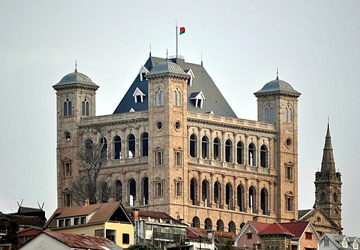
Le palais de Manjakamiadana a été construit en 1938 par l'architecte Français nommé
"Jean Laborde"; c'est la Reine Ranavalona I qui a ordonné sa construction. Le palais
a encore été en bois Tranovola. Au début du stule C'est en 1867 que la Reine Ranavalona
II a demandé à Jean Laborde de redessiner l'architecture du palais.
C'est un complexe royal fortifié situé au centre ville d'Antananarivo, la capitale de Madagascar.
De nombreuse parties de cet ensemble sont dues à des architectes que ls différents monarques
firent venir du Royaume-Uni et de la France au XIXe siecle.
Cet ensemble prestigieux est le plus célèbre rova, qui désigne une forteresse royale.
La forme du Rova d'Antananarivo est à peu près pentagonale. Dominant la capitale
depuis le sommet de la colline Analamanga, il rassemble à l'interieu de son enceinte
des palais dont caractéristique Palais de la Reine (Manjakamiadana)
Après l'incendie du Palais de la Reine à Manjakamiadana, elle a rouvert officiellement
ses portes au grand public le 19 juin 2023
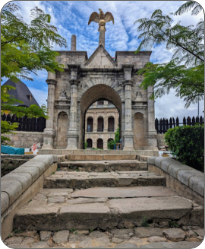
profil
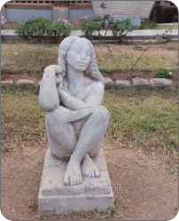
Ranavalona_III
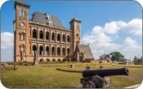
Rova
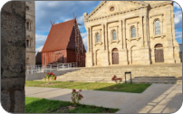
Rova
Le Parc Bootanique de Tsimbazaza
Ce parc est un lieu de distraction ainsi qu'un endroit de conservation des faunes et flores de
Madagascar.
Ce parc a été fondé en 1925 par
les colons Français. Mais avant cela, le Roi Radama I avait déjà creusé le lac pour le bain des
soldats

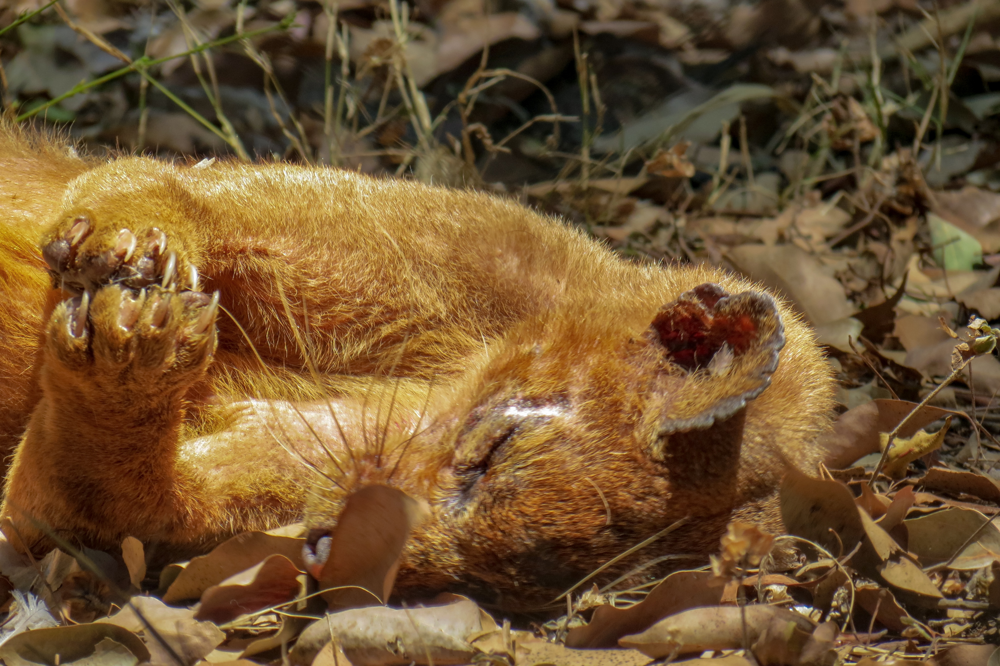
fossa
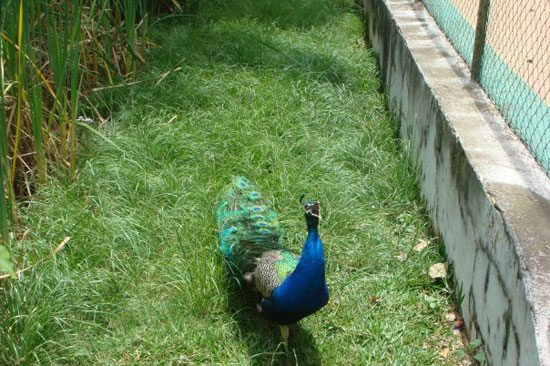
paon

lémurien
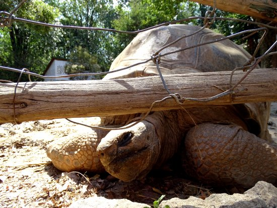
grosse tortue
CROC-FARM
crocfarm est un parc animalier et botanique où les visiteurs peuvent découvrir les crocodiles,
lémuriens, caméléons, baobabs, et autres espèces endémiques de Madagascar à seulement 3 km de
l'aéroport international d'Antananarivo.
Crocfarm s'est engagé dans une politique de sensibilisation pour la protection de la faune et de la
flore qui constitue la biodiversité malgache.
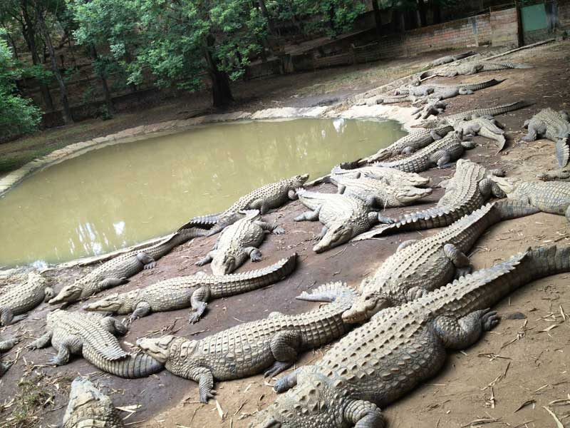
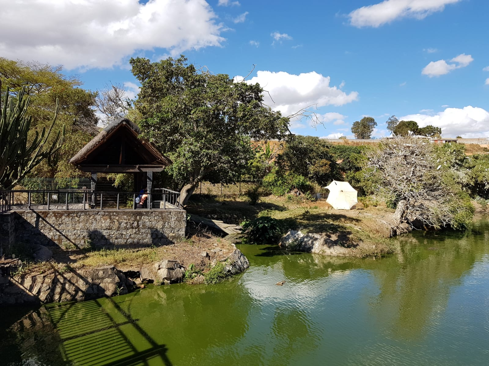
FAUNE
La faune de Madagascar est d'une richesse incomparable. Elle est considérée par tous les
scientifiques comme un sanctuaire de la nature et le berceau d'espèces endémiques de l'île
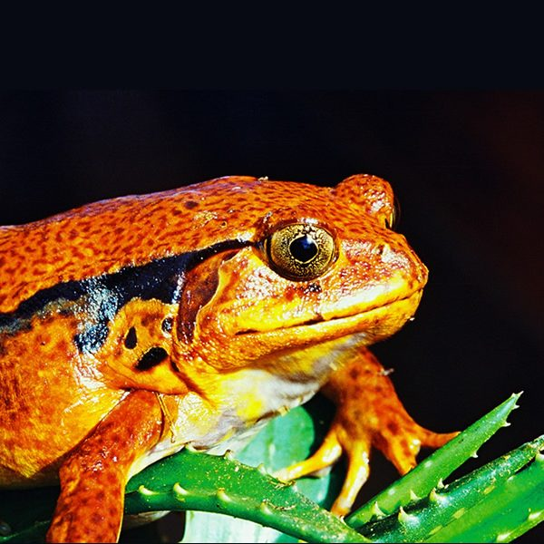
Dyscophus guineti
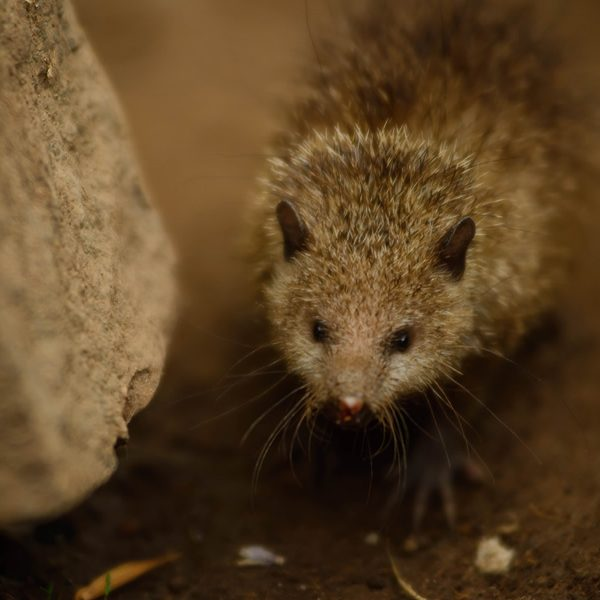
Tenrec ecaudatus

mini croco
FLORE
Madadgascar abrite plusieurs espèces de plantes, parmi lesquelles on compte +19000 espèces
endémiques
Elle est considérée par tous les scientifiques comme un sanctuaire de la nature, Madagascar
abrite un écosystème unique

Europhorbia pedilanthoides

Pachypodium gracilius
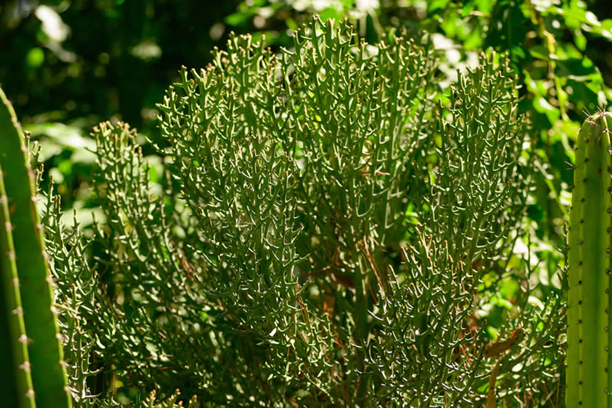